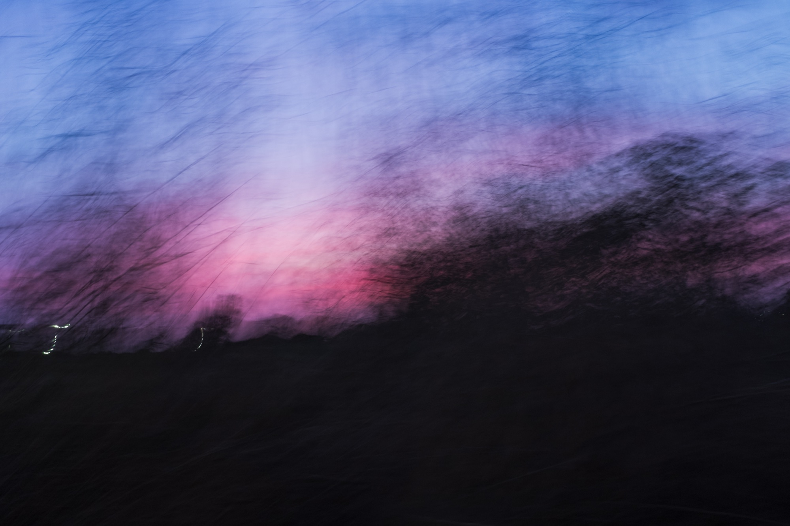
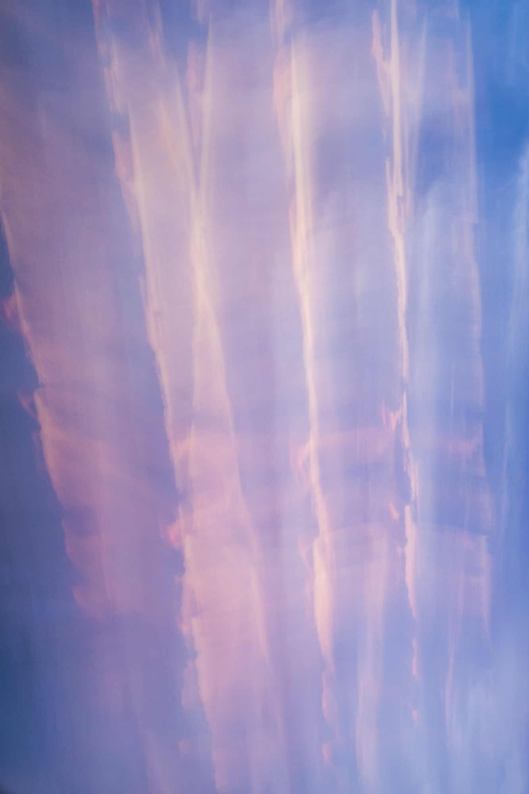

dysography /dɪˈzɒɡrəfi/ (also dysographies, pl.) n. [neol., from Mod. Gk. δύση (dýsi), sunset, west + Gk. -γραφία (-graphía), writing, inscription; cf. photography] 1. A sunset-writing; the inscription of a sunset through the photographic act. 2. (visual art) A photographic technique in which intentional camera movement during extended exposure translates the ephemeral moment of the subject — typically a seascape or natural horizon — into emanating fields of color-light, preserving the gestural trace of the photographer as the primary site of chromatic and temporal experience. It., pl. disografie.

